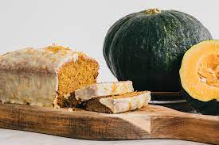

Bolo de Abóbora com Coco
Fotografia em tons de Bolo de Abóbora com Coco deliciosa feita
com Leite NINHO, ovos, abóbora, açúcar e coco

Ingredientes
- 1 xícara (chá) de Leite Líquido NINHO® Forti+ Integral
- 3 ovosmeia xícara (chá) de óleo
- 2 xícaras (chá) de abóbora
- 1 e meia xícara (chá) de açúcar demerara
- 2 xícaras (chá) de farinha de trigo
- 1 xícara (chá) de coco seco ralado
- 1 colher (sopa) de fermento em pó
Modo de Preparo
- . Em um liquidificador coloque o Leite NINHO, os ovos, o óleo, a abóbora e o açúcar e bata até obter uma mistura homogênea.
- . Em um recipiente, despeje a mistura e adicione a farinha de trigo, o coco e o fermento e misture bem.
-
. Coloque em uma forma de furo central (23 cm de diâmetro), untada e enfarinhada, e leve pra assar em forno média(180°C) preaquecido, por cerca de 40 minutos. Sirva.
Site de bolo